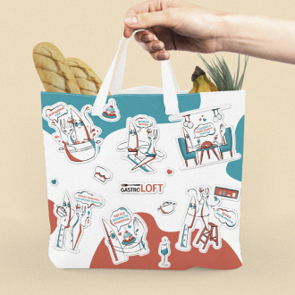

<div class="pdf_wrapper">
    <div class="container">
        <button type="button" data-type="close" class="close main_btn with_hover closeBtn">
            <svg width="16" height="16" viewBox="0 0 16 16" fill="none" xmlns="http://www.w3.org/2000/svg">
                <path d="M8 9.6L14.4 16L16 14.4L9.6 8L16 1.6L14.4 0L8 6.4L1.6 0L0 1.6L6.4 8L0 14.4L1.6 16L8 9.6Z" fill="#C4C4C4"></path>
            </svg>
        </button>
        <div class="field">
            <canvas id="pdf"></canvas>
            <div id="pdf_loading">
                <div  class="lds-ring"><div></div><div></div><div></div><div></div></div>
            </div>

        </div>
        <div class="decription">
            Переглянути інші проекти
        </div>
        <div class="slider_container">
            <div class="swiper_pdf uncelectable">
                <div class="swiper-wrapper">
                    <!-- Slides -->
                    <div class="swiper-slide" data-pdf-change="true" data-path="./pdf/test1.pdf">
                        
                    </div>
                    <div class="swiper-slide"  data-pdf-change="true" data-path="./pdf/test2.pdf">
                        
                    </div>
                    <div class="swiper-slide"  data-pdf-change="true" data-path="./pdf/test3.pdf">
                        
                    </div>
                    <div class="swiper-slide"  data-pdf-change="true" data-path="./pdf/test1.pdf">
                        
                    </div>
                    <div class="swiper-slide"  data-pdf-change="true" data-path="./pdf/pdf1.pdf">
                        
                    </div>
                  </div>
                  <!-- If we need navigation buttons -->
                  <div class="swiper-button-prev">
                    <svg width="27" height="13" viewBox="0 0 27 13" fill="none" xmlns="http://www.w3.org/2000/svg">
                        <path fill-rule="evenodd" clip-rule="evenodd" d="M7.20726 10.7927L7.91436 11.4998L6.50015 12.9141L5.79304 12.207L0.793045 7.20696L0.0859381 6.49985L0.793045 5.79274L5.79305 0.792743L6.50015 0.0856367L7.91437 1.49985L7.20726 2.20696L3.91436 5.49985L25.5001 5.49985L26.5001 5.49985L26.5001 7.49985L25.5001 7.49985L3.91436 7.49985L7.20726 10.7927Z" fill="black"/>
                        </svg>
                        
                  </div>
                  <div class="swiper-button-next">
                    <svg width="27" height="13" viewBox="0 0 27 13" fill="none" xmlns="http://www.w3.org/2000/svg">
                        <path fill-rule="evenodd" clip-rule="evenodd" d="M19.7929 10.7929L19.0858 11.5L20.5 12.9142L21.2071 12.2071L26.2071 7.20711L26.9142 6.5L26.2071 5.79289L21.2071 0.792894L20.5 0.0857873L19.0858 1.5L19.7929 2.20711L23.0858 5.5L1.5 5.5L0.500001 5.5L0.500002 7.5L1.5 7.5L23.0858 7.5L19.7929 10.7929Z" fill="black"/>
                        </svg>
                        
                  </div>
            </div>
        </div>

    </div>
</div>